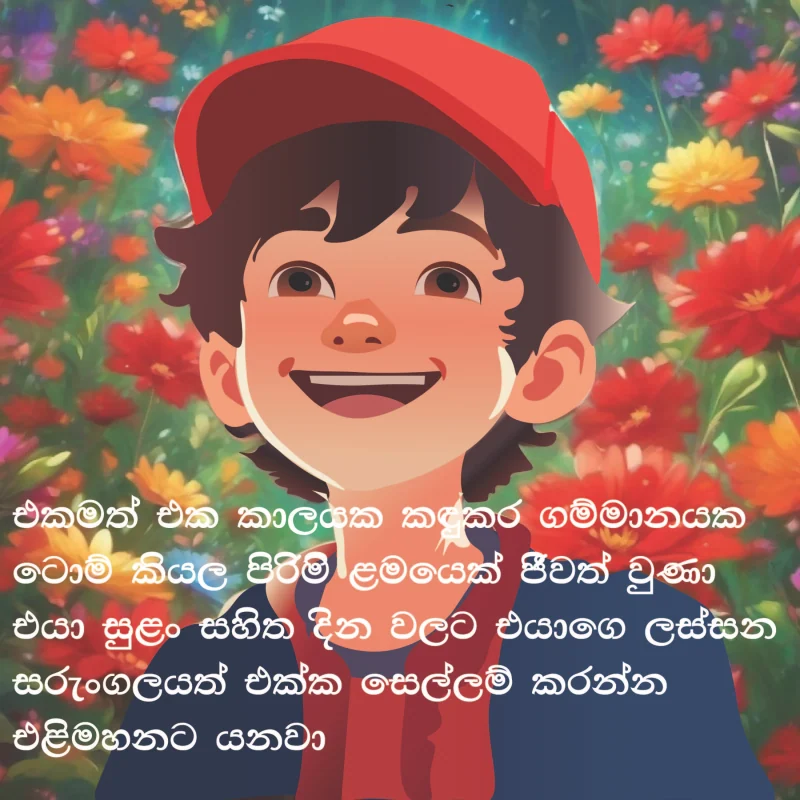
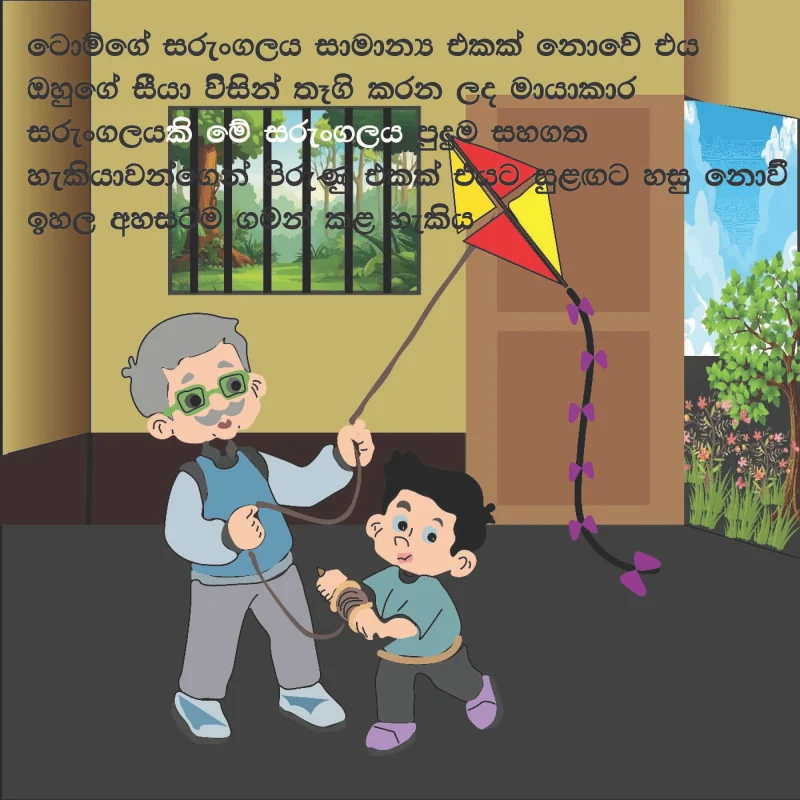
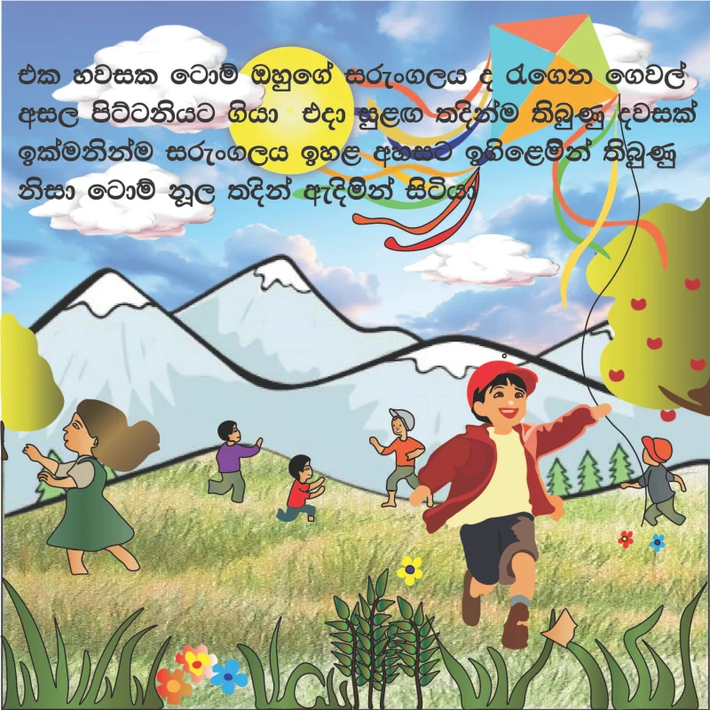
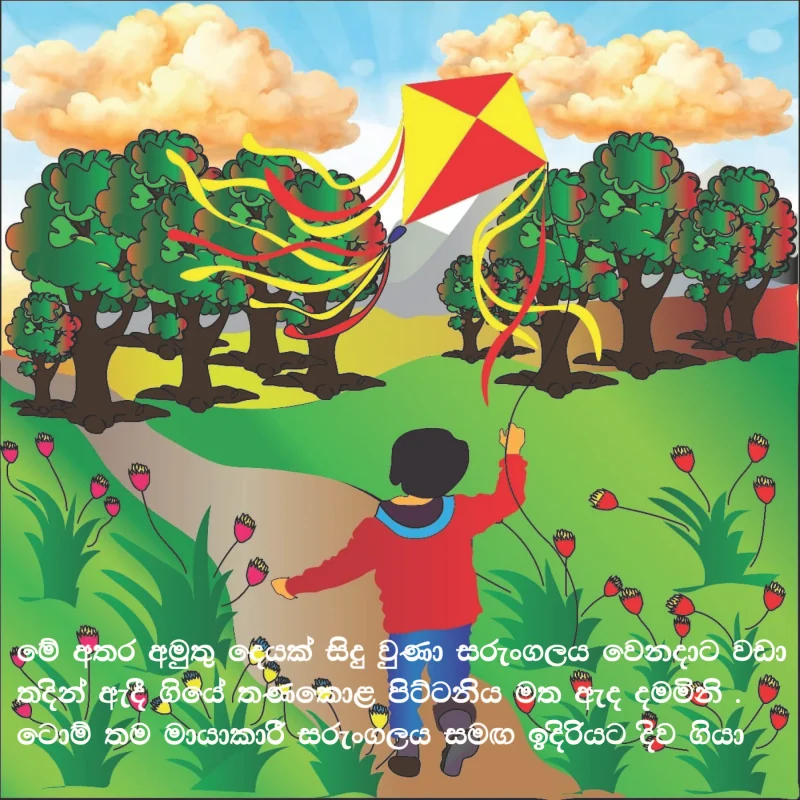
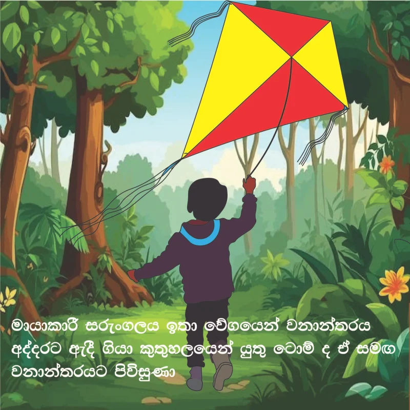
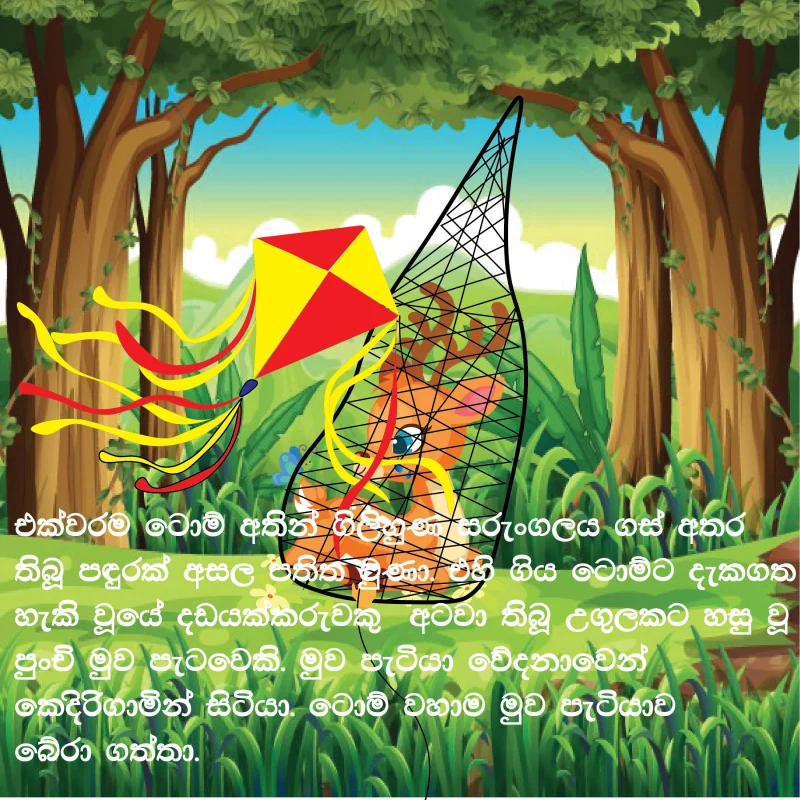
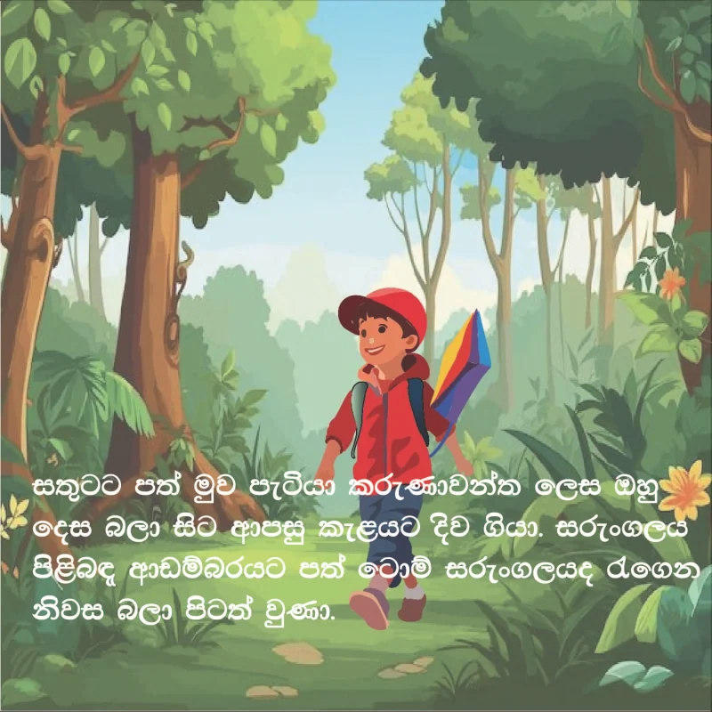
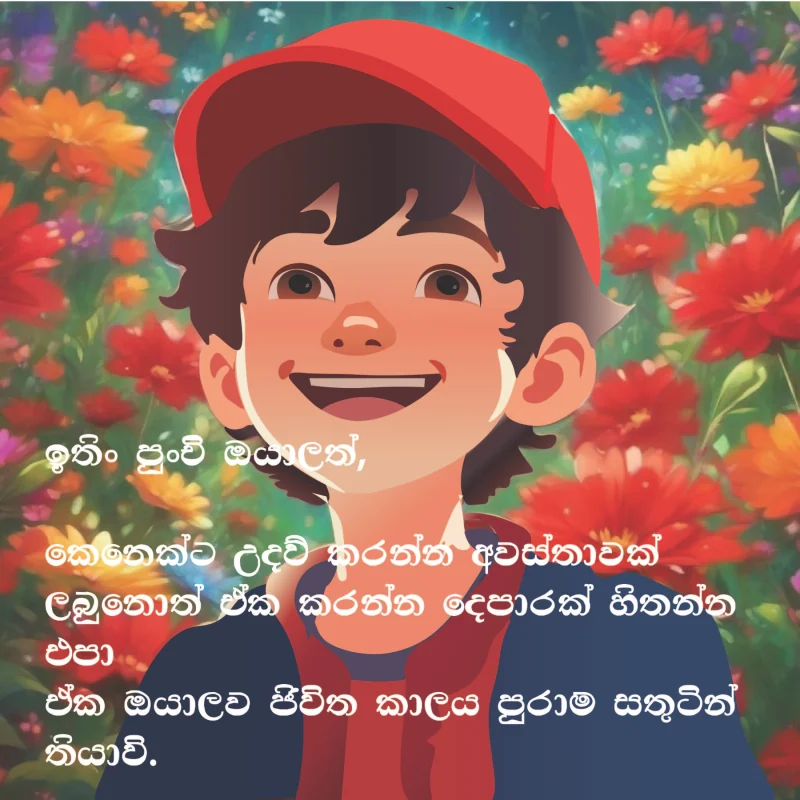
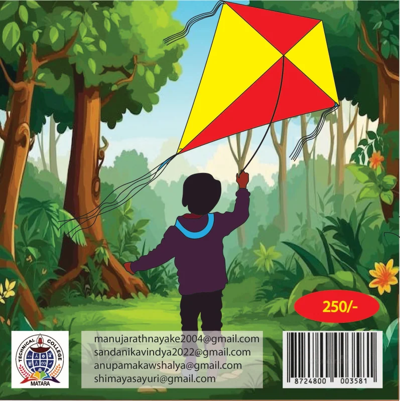

Graphic Design / Storybook
Kite adventure
The complete illustrated storybook in 10 pages, including the front and back covers. Select a page to enlarge it.

Kite adventure / Cover
A woodland cover introducing the kite adventure.


Kite adventure / Page 1
The story opens with the cheerful child character against a floral background.


Kite adventure / Page 2
A family scene introduces the handmade kite.


Kite adventure / Page 3
Children fly their kites in an open landscape.


Kite adventure / Page 4
The kite rises above the garden and trees.


Kite adventure / Page 5
The adventure continues along a path through the woodland.


Kite adventure / Page 6
A tree and a tangled kite create a turning point in the story.


Kite adventure / Page 7
The child stands with the kite on the woodland path.


Kite adventure / Page 8
A character close-up accompanies the closing story text.


Kite adventure / Back cover
The back cover carries the woodland theme through to the final layout.
Explore more of my design work.
← Back to Graphic Design